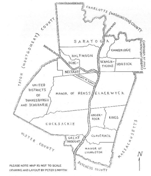
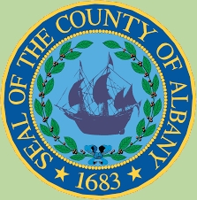

Albany was one of the twelve original counties of colonial New York as established by Governor Thomas Dongan in 1683. This page provides basic definitions and access to Albany's essential parts and historical narratives. Please understand that the core of our concern is the people of the city of Albany as distinct from its hinterland.
By definition, Albany County initially was to "containe the Towns of Albany, the Collony Renslaerwyck, Schonecteda, and all the villages, neighborhoods, and Christian Plantacons on the east side of Hudson River from Roelof Jansen's Creeke, and on the west side from Sawyer's Creeke to the Sarraghtoga." In time, its boundary lines would become more closely defined!
But practically speaking, until the late 1760s, most people thought of Albany County as the entire upriver region of the province. Any more precise definition of its boundaries was the subject of much discussion, uncertainty, and controversy involving Yankees and Yorkers, the French, other European settlers, and Native peoples - original settlers of the entire region. However, Albany's expansive and amorphous nature is portrayed graphically on a number of contemporary maps - particularly those representing the region in 1771 and 1776.
For the entire colonial period, the Hudson River was the defining and unifying physical feature of the region. The objective of virtually all trade and travel was to reach and/or use the Hudson.
Albany County was composed of a number of political subdivisions. Located on a map of the province dated 1776, they included the City of Albany, the Manor of Rensselaerswyck (later split into Watervliet (then Colonie), Bethlehem, the hilltowns, and the East Manor), the town or borough of Schenectady, the village of Kinderhook, Schaghticoke, Livingston Manor, Saratoga, Hoosick, Great Imboght, Catskill and Coxsackie, Schoharie, Claverack, King's District, German Camp, and Cambridge.
Halfmoon was an informal entity from the early eighteenth century and erected as a town in 1788. Lansingburgh or "the New City" was known separately from the 1770s.
In the decade prior to the Revolution, three new counties [ named Tryon (Mohawk basin and Adirondacks), Charlotte (Adirondacks and Lake Champlain), and Gloucester (much of the Hampshire Grants - today's Vermont) ] were taken off and established from the newly settled lands in the western and northern parts of original Albany County. However, the latter two especially, were sparsely settled until after the war - even though relatives and associates of important Albany personages held title to much of the best acreage.
Even so, in 1774, Albany County was the most populated county in colonial New York with 42,706 settlers. In 1790, the count had reached 75,921 inhabitants and it still was the most populated county in what now was New York State. By 1800, Albany County had achieved its present boundaries as Rensselaer, Saratoga, Schenectady, Schoharie, Greene, and Columbia Counties had been split off from it. Albany County was now confined to the west side of the Hudson River and south of the Mohawk. Consequently, its population had dipped to 25,155 people!
For most of the colonial period, the city and county of Albany sent two and then three delegates to the Provincial Assembly. Rensselaerswyck and later Schenectady (beginning in 1726) also were allowed one delegate each. From its earliest days, the Albany County militia was composed of residents of the county's communities and was organized by locale.
The Colonial Albany Social History Project is focused on the people who founded and built the CITY of Albany during its formative years. However, we understand that the city story cannot be separated from that of its hinterland! This page will provide access to information and issues relating to the people of colonial Albany and, where necessary and feasible, including the larger county set in the surrounding countryside.
Population *Statistics for Albany County
1686 - 2,143 (including 157 Negroes)
1698 - 1,476 (city and Rensselasersyck in 1697)
1703 - 2,273 (province = 20,665)
1714 - 3,329
1723 - 6,501
1731 - 8,573 (second to New York)
1737 - 10,681 (most populous county)
1749 - 10,634
1756 - 17,424
1771 - 42,706
1786 - 72,360 (several counties split off within a few years)
The counties established by the Duke of York in 1683 were named New York, Suffolk, Kings, Queens, Richmond, Westchester, Orange, Ulster, Dutchess, Albany, and Cornwall (Maine) and Dukes (Martha's Vineyard and other islands). The last two became part of New England in 1691.
The most comprehensive and compendious history of Albany County was published in 1886. Online resources: The Wikipedia presentation has many interesting features; Family Search; Rootsweb.A basic Google.com search reveals many many potential resources. See also, Useful links on the Albany County website.
This very useful and handy diagram map entitled Albany Districts in 1772 accompanying an article by David Kendall Martin entitled "Districts of Albany County, New York, 1772–1784," was previously published in NYGBR (Fall 1990). In 2012, it appears to have been taken off-line. However, it WAS available separately in printed form. The less-than-perfect image appearing above was appropriated from the article appearing in the NYGBR.
Seal of Albany County: adapted from the Wikipedia article on Albany County in September 2016. See also an online historical narrative on "the" coat-of-arms. GIS-based map of Albany County today.
The standard population sources are summarized elsewhere.
Gateway to our introduction to the Albany County Hall of Records.
first posted 2000; recast and revised 4/19/15; last updated 10/11/17